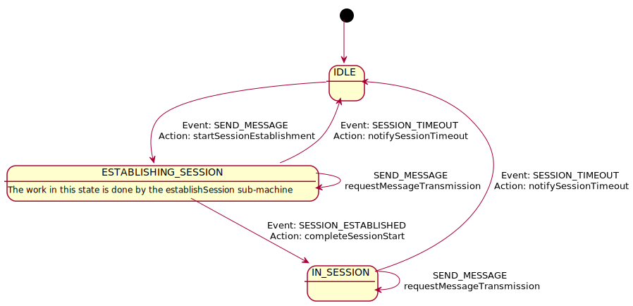

This machine manages communications using a "stop and wait" protocol. Only one message is allowed to be outstanding.
Before any message can be exchanged, however, a session must be established with the peer. Establishing a connection requires several exchanges to authenticate. The connection will remain active as long as messages continue to be exchanged with a minimum frequency.
| SEND_MESSAGE | SESSION_ESTABLISHED | SESSION_TIMEOUT | |
|---|---|---|---|
| IDLE | startSessionEstablishment returns:
transition : ESTABLISHING_SESSION |
transition : none |
transition : none |
| ESTABLISHING_SESSION | requestMessageTransmission returns:
transition : none |
completeSessionStart returns:
transition : IN_SESSION |
notifySessionTimeout returns:
transition : IDLE |
| IN_SESSION | requestMessageTransmission returns:
transition : none |
transition : none |
notifySessionTimeout returns:
transition : IDLE |
| Events | |
|---|---|
| SEND_MESSAGE | |
| SESSION_ESTABLISHED | |
| SESSION_TIMEOUT | |
| States | |
|---|---|
| IDLE | |
| ESTABLISHING_SESSION | The work in this state is done by the establishSession sub-machine |
| IN_SESSION | |
| Actions | |
|---|---|
| startSessionEstablishment |
Start the session establishment process by activating the establishSession machine.
Returns:
|
| completeSessionStart |
Start the session timer and notify the sendMessage machine that the session is
established.
Returns:
|
| notifySessionTimeout |
Notify the sendMessage machine that the session has timed-out.
Returns:
|
| requestMessageTransmission |
Extend the session timer and pass the message to be sent to the sendMessage machine.
Returns:
|
| Sub Machines | |
|---|---|
| establishSession | Establish a connection with the peer. |
| sendMessage | Transmit message to the peer. |